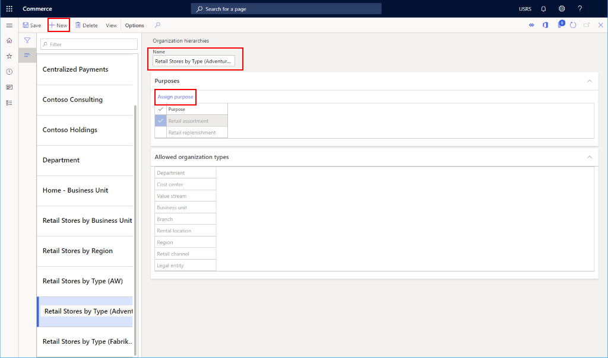
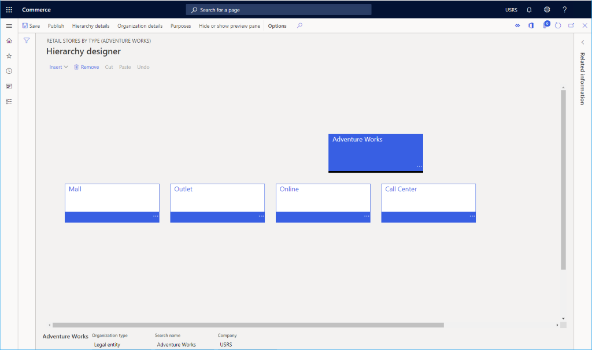

Organisationshierarchien einrichten
Important
Dynamics 365 Retail ist jetzt Dynamics 365 Commerce und bietet umfassende Handelsfunktionen für alle Kanäle – von E-Commerce über Shops bis hin zu Callcentern. Weitere Informationen zu diesen Änderungen finden Sie unter Microsoft Dynamics 365 Commerce.
In diesem Thema wird beschrieben, wie man in Microsoft Dynamics 365 Commerce Organisationshierarchien aufbaut.
Übersicht
Bevor Sie Kanäle erstellen, müssen Sie sicherstellen, dass Ihre Organisationshierarchien eingerichtet wurden.
Organisationshierarchien können verwendet werden, um unterschiedliche Perspektiven des Unternehmens anzuzeigen und entsprechende Berichte zu erstellen. So können Sie z. B. eine Hierarchie für Steuererklärungen sowie für rechtlich relevante oder für gesetzlich vorgeschriebene Berichte einrichten. Anschließend können Sie eine weitere Hierarchie einrichten, um anhand von Finanzdaten Berichte zu erstellen, die zwar gesetzlich nicht erforderlich sind, aber zur internen Berichterstattung dienen.
Bevor Sie eine Organisationshierarchie erstellen, müssen Sie Organisationen erstellen. Weitere Informationen finden Sie unter Juristische Personen erstellen oder Organisationseinheiten erstellen.
Weitere Informationen finden Sie unter folgenden Themen.
- Organisationen und Organisationshierarchien – Übersicht
- Ihre Organisationshierarchie planen
- Erstellen einer Organisationshierarchie
Erstellen einer Organisationshierarchie
Führen Sie die folgenden Schritte aus, um eine Organisationshierarchie zu erstellen.
- Gehen Sie im Navigationsbereich zu Module > Retail und Commerce > Kanaleinrichtung > Organisationshierarchien.
- Wählen Sie im Aktivitätsbereich Neu aus.
- Geben Sie im Feld Name einen Wert ein.
- Wählen Sie im Abschnitt Zweck die Option Zweck zuweisen.
- Suchen Sie in der Liste den gewünschten Datensatz, und wählen Sie ihn aus. Wählen Sie einen Zweck aus, der Ihrer Organisationshierarchie zugewiesen werden soll.
- Wählen Sie im Abschnitt Zugewiesene Hierarchien die Option Hinzufügen.
- Markieren Sie in der Liste die ausgewählte Zeile. Suchen Sie die Hierarchie, die Sie soeben erstellt haben.
- Wählen Sie OK.
Die folgende Abbildung zeigt eine beispielhafte Organisationshierarchie, die für eine fiktive Gruppe von „Adventure Works”-Läden erstellt wurde.

Hinzufügen von Organisationen zu einer Hierarchie
Gehen Sie folgendermaßen vor, um Organisationen zu einer Hierarchie hinzuzufügen.
- Suchen Sie in der Liste den gewünschten Datensatz, und wählen Sie ihn aus. Wählen Sie Ihre Hierarchie aus.
- Wählen Sie im Aktionsbereich Anzeigen aus.
- Fügen Sie Organisationen nach Bedarf hinzu.
- Um eine Organisation hinzuzufügen, wählen Sie Bearbeiten und dann Einfügen aus. Wenn Sie mit den Änderungen fertig sind, können Sie einen Entwurf speichern und die Änderungen veröffentlichen.
Die folgende Abbildung zeigt eine juristische Person, die im Hierarchie-Stammverzeichnis hinzugefügt wurde. Für die Kanäle „Mall“, „Outlet“, „Online“ und „Callcenter“ wurden vier Kostenstellen hinzugefügt. Anschließend können jeweils verschiedene Einzelhandels-, Callcenter- und Online-Kanäle hinzugefügt werden.

Zusätzliche Ressourcen
Organisationen und Organisationshierarchien – Übersicht
Planen Ihrer Organisationshierarchie
Erstellen juristischer Personen